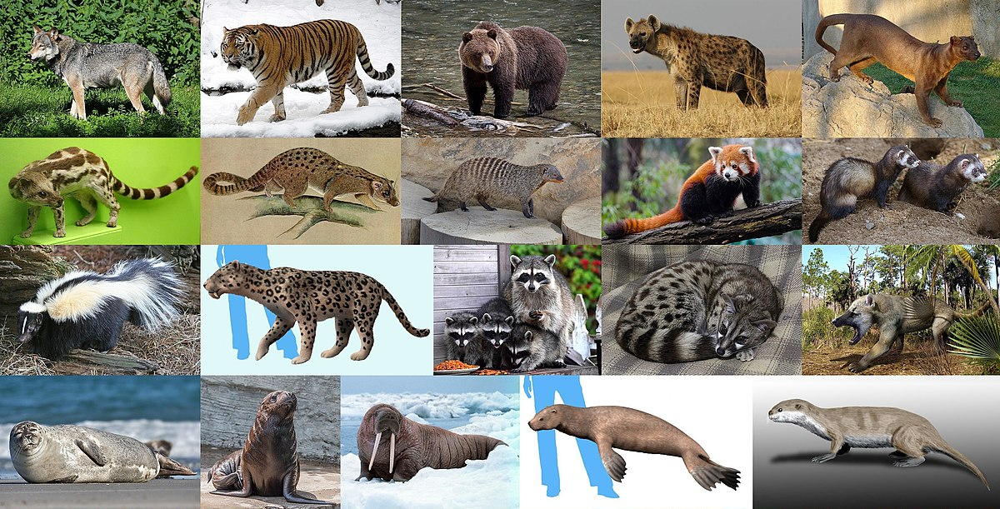
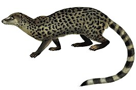
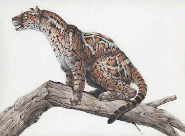
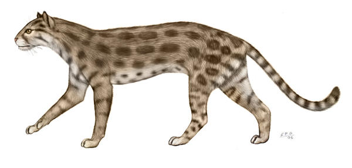

Origine et Évolution des Félins
-
Ancêtre commun des Carnivora :
Les félins font partie de l'ordre des Carnivora, qui comprend aussi les canidés (chiens, loups), les ursidés (ours), et d'autres carnivores. Cet ordre a divergé il y a environ 55 à 60 millions d'années.

-
Miacidae :
Les premiers ancêtres des carnivores modernes étaient des mammifères appelés Miacidae, qui ont vécu durant le Paléocène et l'Éocène (il y a environ 65 à 33 millions d'années). Ces animaux étaient de petits carnivores arboricoles.

-
Proailurus :
Le premier ancêtre commun reconnu des félins est Proailurus (signifiant "premier chat"), qui a vécu il y a environ 25 à 30 millions d'années durant l'Oligocène. Proailurus était un petit mammifère agile et arboricole, considéré comme le premier membre de la famille des félidés.

-
Pseudaelurus :
Proailurus a évolué en Pseudaelurus il y a environ 20 millions d'années. Pseudaelurus est un ancêtre plus avancé qui a donné naissance à plusieurs lignées de félins modernes.

pseudaelurus.jpg